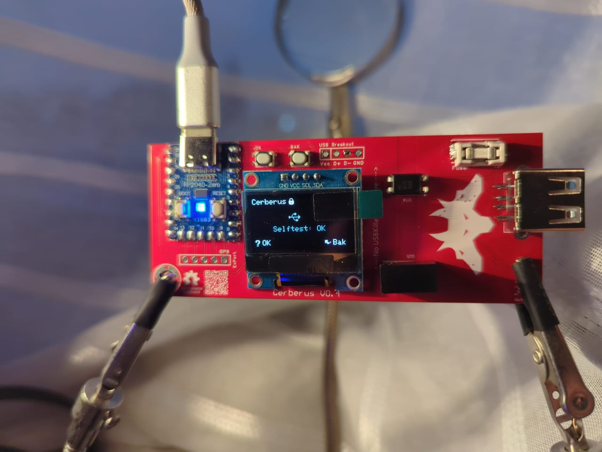
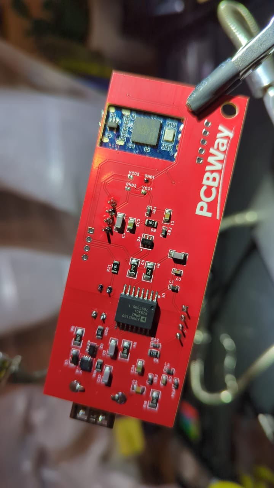

Después de mucho tiempo por fin pude terminar la primera versión funcional del proyecto, Cerberus. Fue un camino largo, para este punto tengo 4 prototipos, cada uno con errores diferentes y cosas que sinceramente estaban mal hechas.
Este proyecto lo empecé gracias a que vi USBValve en el canal de Linus Tech Tips y se me hizo muy interesante. Yo quería uno pero tenía relativamente poca experiencia con hardware. Se puede ver en mi intento de PCB

Cuando me di cuenta de mi error me di cuenta que USBValve no tiene protección contra USBKiller y eso me pareció una gran oportunidad! Poder aportar algo nuevo a un proyecto que antes de mi intervención se veía muy robusto.
Me puse a investigar y descubrí que Electronic Cats vende un producto como el que quería, un "condón" que protege tu puerto USB de todo tipo de ataques, pero había un detalle que me hizo mucho ruido lo hace desconectando todos los pines de datos
Para mí eso lo hacía en extremo deficiente para un investigador
que quiere debuggear payloads o gastar bromas. Por eso empecé a
trabajar en mi propio diseño
gracias a que EC es una empresa dedicada al software libre pude
bajar los diseños y empezar a modificarlos como base, pero leí muy
mal los data sheets de los componentes y mi diseño quedó horrible
además de inservible
.png)
No conecté las rutas de datos, mi circuito de sobrevoltaje estaba al revés y no podía corregirlo. Por eso después hice módulos de todo y a volver a la protoboard, con eso pude hacer mi primera versión funcional.
.png)
En este punto ya había invertido mucho tiempo en el hardware, en lo que debuggeaba cosas me puse a tocar el software, y fui cambiando la GUI, hice pantallas e indicadores con el NeoPixel de la RP2040-zero. Con eso fui avanzando en versiones del firmware, pero aún me quedaban muchas dudas de mi circuito. Me puse a investigar mucho y me di cuenta de algo terrible para mí en ese punto.
A partir de la versión 3 de USBKiller se pueden dar descargas por los buses de datos, es algo completamente diferente a lo que yo tenía diseñado. Por lo que tuve que rediseñar todo otra vez. ¿Cómo aíslas eléctricamente buses datos de "alta velocidad" pero que se sigan comunicando? Pues no sabía, toca leer mucho.
Mientras buscaba componentes e ideas me topé con el módulo USB de ADUM3160, parecía ideal! Lo adapté y todo hacía sentido, pero me topé con una pared. Con solo este circuito es imposible saber tal cual si una USB es USBKiller, claro no le va a pasar nada al circuito pero no te va a avisar, sentía que era algo necesario por lo que busqué como solucionar mi problema.
Al final encontré el UCS4003-E/8N de Texas Instruments, no es que aguante todo el voltaje que le voy a meter pero sí avisa que hay un corto o sobretensión. Con eso es suficiente, lo agregué y llegamos a la versión 1.0:


Esta es la primera versión de la que me siento orgulloso. Es funcional, creo que es estética y muy portable. Siguiendo con la visión de la empresa sé qué esperar a que todos usen exactamente mi diseño completo. Por lo que hice un módulo con la parte de protección de sobrevoltaje para que puedan incluirlo a un USBValve común y corriente o a su diseño personal.
Fue mucho tiempo pero estoy seguro que valió la pena! Espero que pronto puedan tener uno en sus manos y compartir sus comentarios!
Este proyecto fue posible gracias al apoyo de PCBWay. Gracias a ellos pudimos llevar CerberusZero del esquemático a un producto físico. Los archivos Gerber están listos para subir directamente a su plataforma.

¿Tienes ideas? Pull Requests bienvenidos.
Agradecimientos
Cecio
por USBvalve, la base sobre la que construimos el proyecto.
wagiminator
por el diseño del aislador USB ADUM3160.
Cerberus es 100% open source bajo licencia GNU AGPLv3.
Repositorio: github.com/Glitchboi-sudo/Cerberus-A-USB-Watchdog
After a long time I was finally able to finish the first functional version of the project, Cerberus. It was a long road, at this point I have 4 prototypes, each with different errors and things that were honestly poorly made.
I started this project because I saw USBValve on the Linus Tech Tips channel and I found it very interesting. I wanted one but I had relatively little experience with hardware. You can see it in my PCB attempt
When I realized my mistake I noticed that USBValve has no protection against USBKiller and that seemed like a great opportunity! Being able to contribute something new to a project that before my intervention looked very robust.
I started researching and discovered that Electronic Cats sells a product like the one I wanted, a "condom" that protects your USB port from all types of attacks, but there was a detail that bothered me a lot: it does it by disconnecting all data pins
For me that made it extremely deficient for a researcher who wants
to debug payloads or play pranks. That's why I started working on
my own design
Thanks to EC being a company dedicated to free software I was able
to download the designs and start modifying them as a base, but I
read the component datasheets very poorly and my design ended up
horrible and useless
I didn't connect the data routes, my overvoltage circuit was backwards and I couldn't fix it. That's why I later made modules of everything and went back to the protoboard, with that I was able to make my first functional version.
At this point I had already invested a lot of time in the hardware, while debugging things I started touching the software, and I kept changing the GUI, I made screens and indicators with the NeoPixel on the RP2040-zero. With that I was advancing through firmware versions, but I still had many doubts about my circuit. I researched a lot and realized something terrible for me at that point.
Starting from version 3 of USBKiller, discharges can be given through data buses, it's something completely different from what I had designed. So I had to redesign everything again. How do you electrically isolate "high speed" data buses but still allow them to communicate? Well, I didn't know, time to read a lot.
While looking for components and ideas I came across the ADUM3160 USB module, it seemed ideal! I adapted it and everything made sense, but I hit a wall. With just this circuit it's impossible to know if a USB is a USBKiller, of course nothing will happen to the circuit but it won't warn you, I felt that was necessary so I looked for how to solve my problem.
In the end I found the UCS4003-E/8N from Texas Instruments, it's not that it withstands all the voltage I'm going to put into it but it does warn about a short or overvoltage. That's enough, I added it and we arrived at version 1.0:
This is the first version I'm proud of. It's functional, I think it's aesthetic and very portable. Following the company's vision I know what to expect for everyone to use exactly my complete design. That's why I made a module with the overvoltage protection part so they can include it in a regular USBValve or their personal design.
It took a long time but I'm sure it was worth it! I hope you can soon have one in your hands and share your comments!
This project was made possible thanks to the support of PCBWay. Thanks to them we were able to take CerberusZero from schematic to a physical product. The Gerber files are ready to upload directly to their platform.
Got ideas? Pull Requests welcome.
Acknowledgments
Cecio
for USBvalve, the base on which we built the project.
wagiminator
for the ADUM3160 USB isolator design.
Cerberus is 100% open source under GNU AGPLv3 license.
Repository: github.com/Glitchboi-sudo/Cerberus-A-USB-Watchdog
Etiquetas: Tags: #hardware #iot #seguridad #usb #redteam